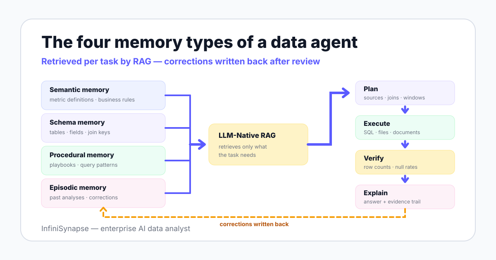

Memory sits inside a precise definition of agents. Anthropic's Building Effective Agents describes agents as LLMs that dynamically direct their own processes and tool usage — and memory is what determines what the agent knows before it directs anything.
Both 2025 academic surveys of the field — A Survey of Data Agents and LLM/Agent-as-Data-Analyst — treat context management as a core architectural component, alongside planning and execution. If terms like RAG or schema recall are new, the data agent glossary defines them in one page.
Strip memory away and every session starts from zero. The agent re-derives what "active user" means, re-guesses which table holds revenue, and re-discovers the join key your analyst corrected last Tuesday.
The corrections themselves are the real loss. You spend review time teaching the agent the right definition, the session ends, and the investment evaporates.
Benchmarks quantify the gap that context closes. On the BIRD text-to-SQL benchmark, human engineers reach 92.96% execution accuracy while models still trail — and the human advantage is held context: definitions, schema familiarity, and remembered conventions.
Memory is the mechanism that moves an agent toward the human side of that gap. It is also part of what separates a data agent from a stateless chat assistant — a distinction our what is a data agent guide walks through stage by stage.
The taxonomy below applies how the 2025 surveys decompose agent context to day-to-day analytics work. Each type stores different content, is retrieved differently, and prevents a different failure.

| Memory type | What it stores | How it is retrieved | Failure it prevents |
|---|---|---|---|
| Semantic | Metric definitions, data dictionaries, business rules | RAG match on the business terms in your question | Computing the wrong version of a metric |
| Schema | Tables, fields, relationships, which source holds what | Schema recall matched against entities in the plan | Wrong table, wrong join key, double counting |
| Procedural | Analysis playbooks, query patterns that worked | Retrieved when a task resembles a solved pattern | Reinvented, inconsistent methodology |
| Episodic | Past analyses, decisions, corrections | Recalled by similarity to the current question | Repeating an error someone already fixed |
Semantic memory holds business meaning: metric definitions, the data dictionary's business-facing half, and rules like "exclude internal test accounts from revenue." It is retrieved with retrieval-augmented generation — the agent searches the knowledge base for entries matching the business terms in your question and injects only those into its working context.
The failure it prevents is the most expensive one: a fluent, confident answer computed on the wrong definition. An agent that retrieves "active user = 30-day rolling distinct user_id" cannot accidentally ship the 7-day version.
Schema memory maps structure: which tables exist, what fields mean, how entities join, and which of your connected sources holds which subject. InfiniSynapse implements this as schema recall inside its self-developed LLM-Native RAG — the agent retrieves the relevant tables and relationships rather than being handed an entire schema dump.
It prevents structural errors: summing an orders amount column when refunds live in a separate table, or joining on email when phone number is the reliable key. In InfiniSynapse's documented cross-source demo — joining JD and Tmall platform data with a CSV file by phone number — knowing which field links the three sources is schema memory at work.
Procedural memory stores method: the cohort logic your team trusts, the steps of a revenue-bridge analysis, the query pattern that handled timezone boundaries correctly. The agent retrieves a playbook when a new task resembles the one the playbook solved.
Without it, every analyst — human or agent — reinvents methodology, and two runs of the same question produce structurally different answers. With it, the second run starts from the pattern that already survived review.
Episodic memory records past work: analyses delivered, decisions taken, and — most valuably — corrections received. Fix a wrong assumption once, and the record persists to surface the next time a similar question arrives.
It prevents the most demoralizing failure mode of AI tools: re-explaining the same constraint every week. It is also the substrate for self-correction, which we return to below.
A correction made once should never need to be made twice — that is the entire job of agent memory.
The naive alternative to memory is pasting everything into the prompt: the full schema, the metrics sheet, last month's analysis. That works for one table and fails for one enterprise.
| Dimension | Context window (prompt stuffing) | Memory layer (knowledge base + RAG) |
|---|---|---|
| Persistence | Emptied when the session ends | Survives sessions, users, and model upgrades |
| Selection | Everything you pasted, relevant or not | Only entries matched to the current question |
| Cost behavior | Every token re-processed on every request | Prompts stay small as knowledge grows |
| Governance | Untracked copies scattered across chat histories | Versioned entries with owners and review dates |
| Auditability | No record of what influenced the answer | Retrieved entries can be logged per analysis |
Longer context windows do not dissolve the problem, because relevance — not capacity — is the binding constraint. A model handed 400 table definitions still has to guess which three matter; retrieval over a curated knowledge base answers that question before generation starts.
This is an architecture decision, not a feature toggle. Our AI-native data platform guide treats the memory layer as one of the load-bearing components that separates AI-native systems from BI tools with a chat box attached.
InfiniSynapse draws one line through everything above: data sources are for the data; the knowledge base is for business definitions, data dictionaries, analysis playbooks, conventions, and past cases. Memory never becomes a second copy of your warehouse.
The split keeps each side good at its job. Sources stay governed by database permissions and connect to a multi-source execution layer; the knowledge base stays small, human-readable, and reviewable — and a web search channel covers external facts the internal memory should not hold.
Disclosure, repeated from the top of this page: InfiniSynapse builds this product, so the worked example below shows our own design behaving as intended. Read it as an illustration of the doctrine, not an independent benchmark.
Here is how one seeded definition changes an outcome. Suppose your team defines an active user as 30-day rolling distinct sign-ins, while the generic interpretation is activity within the calendar month.
One entry, written once, changed every subsequent analysis that touches the metric. That compounding effect is why the seeding order in the next section matters more than any model setting.
You do not need a knowledge management project to start; you need roughly three working days of focused writing. The table ranks the first five assets by payoff per hour of effort.
| Asset | Effort | Payoff | Example entry |
|---|---|---|---|
| Top-10 metric definitions | ~half a day | Ends definition guessing on your most-asked questions | "Active user = 30-day rolling distinct user_id; excludes internal test accounts" |
| Data dictionary for most-queried tables | ~1 day | Right tables and joins on the first attempt | "orders.amount is gross; refunds live in the refunds table, keyed by order_id" |
| 3 canonical analysis examples | ~half a day | Procedural templates the agent can follow | "Weekly revenue bridge: steps, sources, and the chart format leadership expects" |
| Naming conventions | ~2 hours | Disambiguates lookalike objects | "Tables suffixed _v2 are current; unsuffixed versions are deprecated" |
| Source-of-truth map | ~2 hours | Resolves conflicts before they reach an answer | "CRM wins for customer attributes; the warehouse wins for transactions" |
The test is visible in the agent's plans: seeded definitions should be cited back to you in plan review, before anything executes. If you run the same question before and after seeding and the plan does not change, the entry is either not being retrieved or is too vague to use.
Write entries the way you would brief a new analyst — one concept per entry, concrete, exceptions stated. Retrieval quality follows entry quality.
A knowledge base that anyone can edit and no one reviews becomes a liability with a search index. Governance reduces to three decisions: who owns each asset class, how changes are versioned, and when entries expire.
| Memory asset | Typical owner | Review cadence | Stale-entry risk |
|---|---|---|---|
| Metric definitions | Finance or business operations | Quarterly, and on any metric change | Restated metrics computed on old logic |
| Data dictionary | Data engineering | On schema migrations | Joins against renamed or dropped fields |
| Analysis playbooks | Senior analysts | Quarterly | Methods that no longer match the business |
| Past cases and corrections | Accumulated in use, curated by analysts | Quarterly purge | Outdated corrections overriding current truth |
Versioning is what turns memory from a risk into an audit asset. When every entry carries an author, a date, and a history, you can answer the regulator-shaped question: which definition produced this number, and who approved it?
This maps directly onto the govern, map, measure, and manage functions of the NIST AI Risk Management Framework, and onto the AI management systems that ISO/IEC 42001:2023 formalizes.
The counterintuitive conclusion: memory makes an agent more auditable, not less. A stateless agent's assumptions vanish with the session; a memory-backed agent's assumptions are written down, versioned, and reviewable — the foundation of explainable AI data analysis.
The ReAct line of research (2022) showed that agents improve when reasoning and action interleave — act, observe, adjust. Memory extends that loop across sessions: the adjustment gets written down instead of forgotten.
In practice the loop looks like this: an analyst rejects a plan in review, states the correction, and the correction lands in episodic memory. The next similar question retrieves it, and the agent's first draft starts where the last review ended.
That is the difference between an agent you supervise forever and one that converges. How much autonomy you then grant — and which guardrails stay mandatory — is the subject of our autonomous data agent guide; how the whole workflow runs day to day is covered in agentic analytics explained.
Connect a source, add your top metric definitions to the InfiniSynapse knowledge base, and run one real question before and after. The change you see in plan review is the memory layer working — or telling you an entry needs a rewrite.
Try InfiniSynapse onlineLast updated: 2026-06-12 · Next scheduled review: 2026-09-12
The memory taxonomy on this page is grounded in published agent research (ReAct, the 2025 data agent surveys), public benchmark figures (BIRD), retrieval-augmented generation references, and governance frameworks (NIST AI RMF, ISO/IEC 42001). Capabilities attributed to InfiniSynapse — LLM-Native RAG, schema recall, Plan mode, the cross-source demo — come from InfiniSynapse product documentation; the worked example is a designed illustration, not an independent benchmark.
Conflict of interest: InfiniSynapse publishes this guide and sells a product with a knowledge-base memory layer. To reduce bias, the page includes a vendor-neutral taxonomy and governance table, explicit cases where teams should wait, and external sources for every numeric claim.
Update cadence: Reviewed every 90 days for terminology, source links, benchmark figures, and schema consistency.